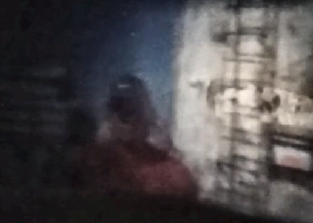
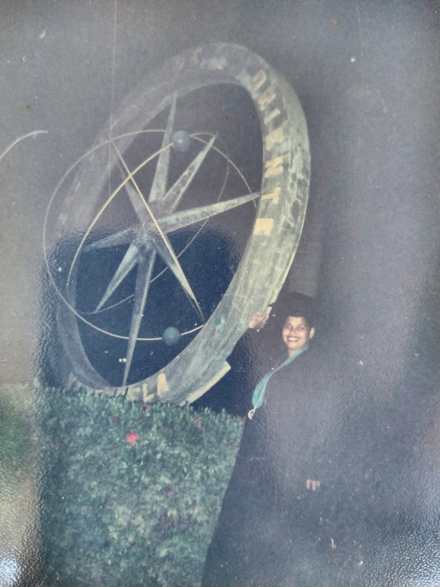
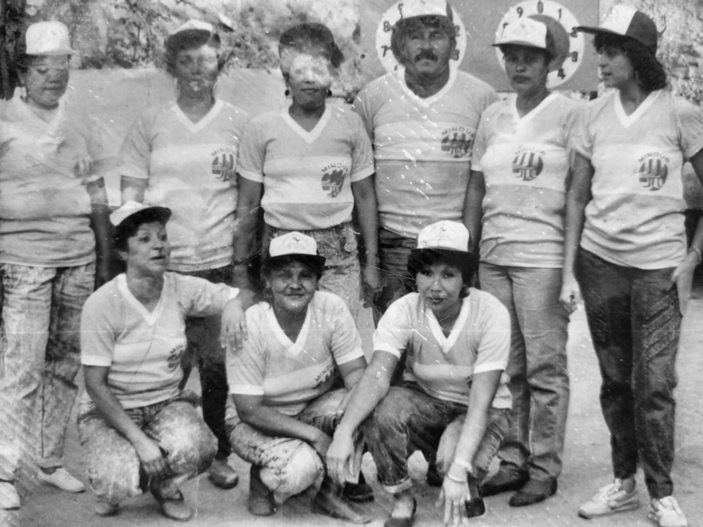

Camara oscura
Predominaron oscuridad, bajo contraste, orientacion invertida e iluminacion desigual. Convino corregir orientacion, recortar y usar una mejora local de contraste.
Resumen de las operaciones aplicadas en los tres casos del trabajo: camara oscura, medio grafico color y medio grafico blanco/negro. Cada tecnica se relaciona con el problema que ayudo a tratar y con archivos del proyecto donde puede consultarse el procedimiento.



Predominaron oscuridad, bajo contraste, orientacion invertida e iluminacion desigual. Convino corregir orientacion, recortar y usar una mejora local de contraste.
La imagen tenia color apagado, velo gris, baja saturacion y ruido. Convino separar luminancia y color para intervenir de forma moderada.
El problema combino bajo contraste, manchas y rayas. Convino comparar ecualizacion global contra restauracion puntual basada en mascara.